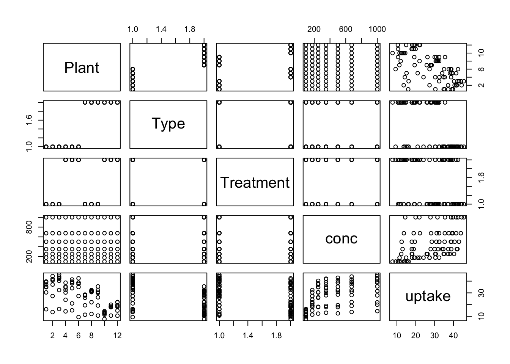
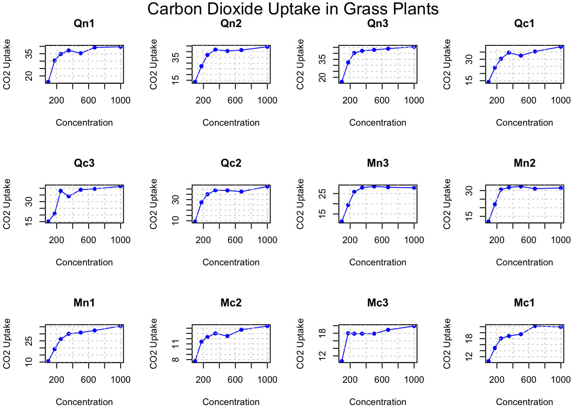
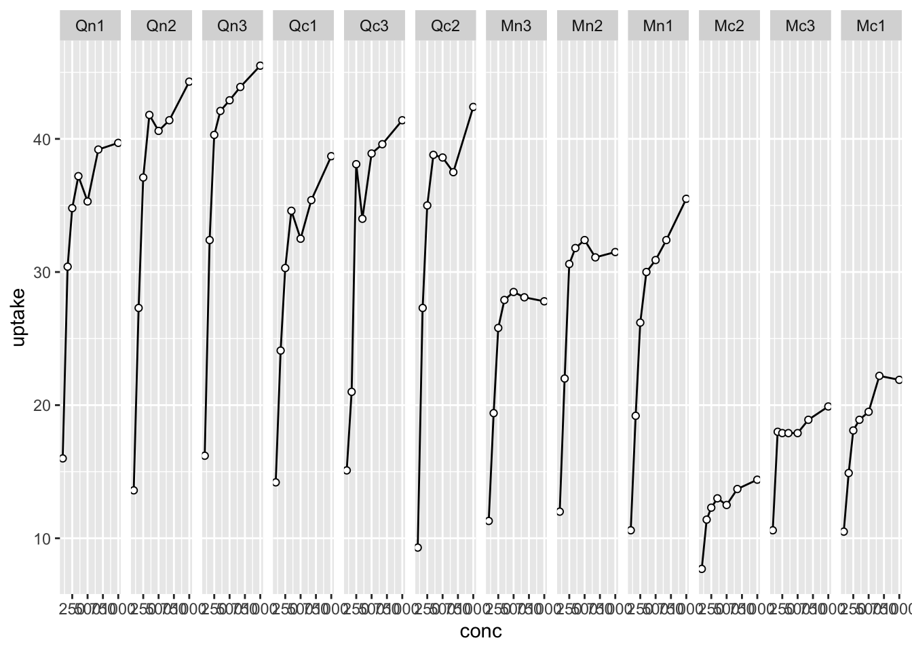
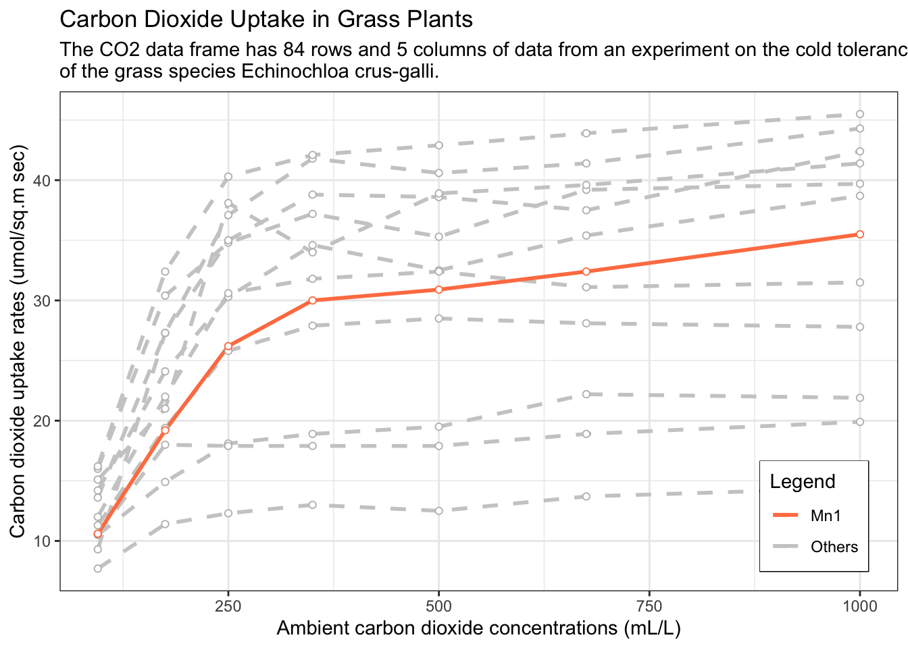
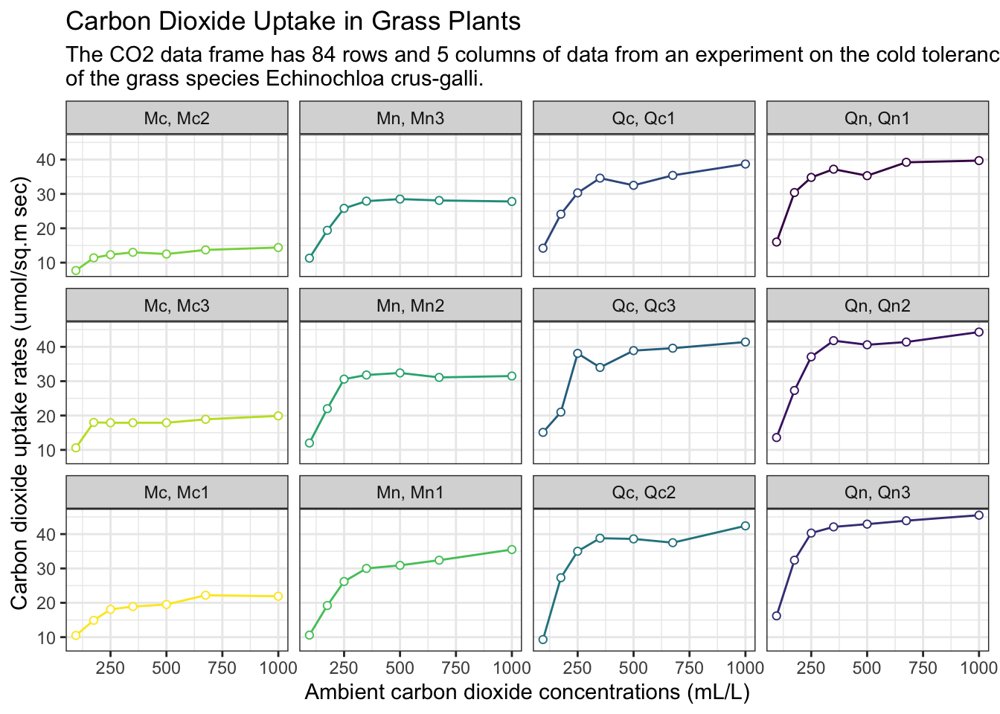

graphics.off()
rm(list = ls())
gc() used (Mb) gc trigger (Mb) limit (Mb) max used (Mb)
Ncells 578501 30.9 1318222 70.5 NA 669274 35.8
Vcells 1059505 8.1 8388608 64.0 16384 1851504 14.2In this blog post, I made line plot with CO2 dataset. CO2 dataset is groupedData. It’s very useful object when you make complicated dataset with formula.
I usually use the following code for initialization. If you don’t want to remove plots and/or variables, you can skip it.
graphics.off()
rm(list = ls())
gc() used (Mb) gc trigger (Mb) limit (Mb) max used (Mb)
Ncells 578501 30.9 1318222 70.5 NA 669274 35.8
Vcells 1059505 8.1 8388608 64.0 16384 1851504 14.2version _
platform aarch64-apple-darwin20
arch aarch64
os darwin20
system aarch64, darwin20
status
major 4
minor 3.1
year 2023
month 06
day 16
svn rev 84548
language R
version.string R version 4.3.1 (2023-06-16)
nickname Beagle Scouts We want to use as few packages (some might call them “libraries”) as possible. If possible, I’m going to use only the tidyverse package. Tidyverse is one of the most famous packages in R programming, and it’s really powerful and useful.
library(tidyverse)── Attaching core tidyverse packages ──────────────────────── tidyverse 2.0.0 ──
✔ dplyr 1.1.2 ✔ readr 2.1.4
✔ forcats 1.0.0 ✔ stringr 1.5.0
✔ ggplot2 3.4.2 ✔ tibble 3.2.1
✔ lubridate 1.9.2 ✔ tidyr 1.3.0
✔ purrr 1.0.1
── Conflicts ────────────────────────────────────────── tidyverse_conflicts() ──
✖ dplyr::filter() masks stats::filter()
✖ dplyr::lag() masks stats::lag()
ℹ Use the conflicted package (<http://conflicted.r-lib.org/>) to force all conflicts to become errorsWhen I write posts in my blog, I use the built-in dataset because I don’t want the reader to suffer by having to find the data from somewhere else.
The dataset I’ll be using in this post is shown below ⬇️ .
Carbon Dioxide Uptake in Grass Plants
The CO2 data frame has 84 rows and 5 columns of data from an experiment on the cold tolerance of the grass species Echinochloa crus-galli.
CO2
An object of class c(“nfnGroupedData”, “nfGroupedData”, “groupedData”, “data.frame”) containing the following columns:
Plant an ordered factor with levels Qn1 < Qn2 < Qn3 < … < Mc1 giving a unique identifier for each plant.
Type a factor with levels Quebec Mississippi giving the origin of the plant
Treatment a factor with levels nonchilled chilled
conc a numeric vector of ambient carbon dioxide concentrations (mL/L).
uptake a numeric vector of carbon dioxide uptake rates (\(\mu\)mol/\(m^2\)sec).
The \(CO_2\) uptake of six plants from Quebec and six plants from Mississippi was measured at several levels of ambient \(CO_2\) concentration. Half the plants of each type were chilled overnight before the experiment was conducted.
This dataset was originally part of package nlme, and that has methods (including for [, as.data.frame, plot and print) for its grouped-data classes.
Take a look the CO2 dataset.
As I said before, CO2 is groupedData (also dataframe). so its description show nfnGrpdD.
CO2 |> head() Plant Type Treatment conc uptake
1 Qn1 Quebec nonchilled 95 16.0
2 Qn1 Quebec nonchilled 175 30.4
3 Qn1 Quebec nonchilled 250 34.8
4 Qn1 Quebec nonchilled 350 37.2
5 Qn1 Quebec nonchilled 500 35.3
6 Qn1 Quebec nonchilled 675 39.2CO2 dataset has several attributes as followings;
CO2 |> class()[1] "nfnGroupedData" "nfGroupedData" "groupedData" "data.frame" and CO2 is 84 rows and 5 columns. it very tiny.
CO2 |> dim()[1] 84 5before make plot, I’d like to know how many kind of Plant in CO2.
if there are too many kind of Plant, I can’t make plots at once. It might be too hard to read even I made plot.
unique(CO2[,1:3]) Plant Type Treatment
1 Qn1 Quebec nonchilled
8 Qn2 Quebec nonchilled
15 Qn3 Quebec nonchilled
22 Qc1 Quebec chilled
29 Qc2 Quebec chilled
36 Qc3 Quebec chilled
43 Mn1 Mississippi nonchilled
50 Mn2 Mississippi nonchilled
57 Mn3 Mississippi nonchilled
64 Mc1 Mississippi chilled
71 Mc2 Mississippi chilled
78 Mc3 Mississippi chilledGreat! There are 12 types of plants in total.
This is the essential information I need to know to plot ahead.
If I plot with plot() function, it will appear like below.
plot(formula = uptake ~ conc,
data = CO2,
type = "p",
main = "Carbon Dioxide Uptake in Grass Plants")
Of course, it is also possible to draw a plot classified by Plant using only the native functions, as shown in the steps below.
However, using ggplot2 is a much simpler and faster way to create beautiful plot.
# Split the dataset by the "Plant" factor
split_data <- split(CO2, CO2$Plant)
# Set the number of rows and columns in the grid
num_rows <- 3
num_cols <- 4
# Create separate scatterplots for each plant
par(mfrow = c(num_rows, num_cols))
# Get the names of the plants
plant_names <- names(split_data)
# Loop through each plant and create a scatterplot
for (i in 1:min(length(plant_names), num_rows * num_cols)) {
plant_data <- split_data[[plant_names[i]]]
# Create the scatterplot with points and lines connecting them
plot(uptake ~ conc, data = plant_data,
main = plant_names[i],
xlab = "Concentration", ylab = "CO2 Uptake",
col = "blue", pch = 16) # pch = 16 specifies point shape
lines(uptake ~ conc, data = plant_data, col = "blue") # Add lines connecting points
grid() # Add grid each plot
}
# Add the common plot title at the top of the entire grid
mtext("Carbon Dioxide Uptake in Grass Plants", side = 3, line = -1.5, outer = TRUE, cex = 1.2)
# Reset the plotting parameters
par(mfrow = c(1, 1))Now, I start to make plot with ggplot! 📈
this is very simple dot plot. almost same as result of base::plot().
CO2 |>
ggplot(aes(conc, uptake)) +
geom_point()
To make it easier for readers to understand, I drew a plot for each of the 12 plant species with lines connecting the dots.
It’s easier to understand than the previous plot, but I still see areas for improvement.
CO2 |>
ggplot(aes(conc, uptake)) +
geom_path() +
geom_point(shape = 21, fill = "white", color = "black") +
facet_wrap(vars(Plant), nrow = 1)
I created the first plot below to give the reader an idea of what to expect. The plots for each of the 12 plants are arranged side-by-side and have the same y scale to make them easier to compare.
The label values on the x-axis were rotated 90 degrees to avoid overlapping letters, making it easier for readers to read the numbers.
CO2 |>
ggplot(aes(conc, uptake, color = Plant)) +
geom_path(show.legend = FALSE) +
geom_point(aes(color = Plant), shape = 21, fill = "white", show.legend = FALSE) +
facet_wrap(vars(Plant), nrow = 1) +
scale_x_continuous(limits = c(0,1200), breaks = seq(0,1200,400)) +
labs(title = "Carbon Dioxide Uptake in Grass Plants",
subtitle = paste0("The CO2 data frame has 84 rows and 5 columns of data from an experiment on the cold tolerance","\n" ,
"of the grass species Echinochloa crus-galli."),
x = "Ambient carbon dioxide concentrations (mL/L)",
y = "Carbon dioxide uptake rates (umol/sq.m sec)",
color = "Legend") +
theme_bw() +
theme(axis.text.x = element_text(angle = 90, hjust = 1, vjust = 0.5))
This time, I plotted a different version of line plot. This plot is a useful way to show a specific value in a spaghetti plot with a lot of data jumbled together.
The package gghighlight makes it very easy to do this 👍, but I sometimes use the above method of plotting using ggplot’s layers instead of using the gghighlight package.
The key to plotting with ggplot’s layer method is to use the subset() function. This is a very useful tip because it allows you to highlight one or more graphs.
Both methods are great, so it’s a matter of preference.
CO2 |>
ggplot(aes(conc, uptake, group = Plant, label = Plant)) +
# path color sets by color name then determine color in scale_color_manual()
geom_path(data = subset(CO2, Plant != "Mn1"), aes(color = "Others"), linewidth = 1, lty = 2) +
geom_path(data = subset(CO2, Plant == "Mn1"), aes(color = "Mn1"), linewidth = 1, lty = 1) +
# point color determines in geom_point() directly
geom_point(data = subset(CO2, Plant != "Mn1"), shape = 21, fill = "white", color = "gray") +
geom_point(data = subset(CO2, Plant == "Mn1"), shape = 21, fill = "white", color = "coral") +
scale_color_manual(values = c("Others" = "gray80","Mn1" = "coral")) +
labs(title = "Carbon Dioxide Uptake in Grass Plants",
subtitle = paste0("The CO2 data frame has 84 rows and 5 columns of data from an experiment on the cold tolerance","\n" ,
"of the grass species Echinochloa crus-galli."),
x = "Ambient carbon dioxide concentrations (mL/L)",
y = "Carbon dioxide uptake rates (umol/sq.m sec)",
color = "Legend") +
theme_bw() +
theme(legend.position = c(0.9, 0.15), # Caution!!! it is relative position ex) 0: left end ~ 1: right end
legend.background = element_rect(fill = "white"),
legend.box.background = element_rect(color = "black"))
This time, we want to plot the classification of plants according to their macroclassification (Mc, Mn, Qc, Qn).
To do this, we first create a column called category using the mutate() function and put in the values that define the major classifications of plants.
df <-
CO2 |>
mutate(category = case_when(str_detect(Plant, "Qn") ~ "Qn",
str_detect(Plant, "Qc") ~ "Qc",
str_detect(Plant, "Mn") ~ "Mn",
str_detect(Plant, "Mc") ~ "Mc",
.default = "Unknown"))
df |> head() Plant Type Treatment conc uptake category
1 Qn1 Quebec nonchilled 95 16.0 Qn
2 Qn1 Quebec nonchilled 175 30.4 Qn
3 Qn1 Quebec nonchilled 250 34.8 Qn
4 Qn1 Quebec nonchilled 350 37.2 Qn
5 Qn1 Quebec nonchilled 500 35.3 Qn
6 Qn1 Quebec nonchilled 675 39.2 QnI have colored them according to the Plant category because if we colored them according to the Plant taxonomy, they would be indistinguishable.
The rest of the plot is the same as the previous plot.
df |>
ggplot(aes(conc, uptake, color = Plant)) +
geom_path(show.legend = FALSE) +
geom_point(aes(color = Plant), shape = 21, fill = "white", show.legend = FALSE) +
facet_wrap(vars(category), nrow = 1) +
labs(title = "Carbon Dioxide Uptake in Grass Plants",
subtitle = paste0("The CO2 data frame has 84 rows and 5 columns of data from an experiment on the cold tolerance","\n" ,
"of the grass species Echinochloa crus-galli."),
x = "Ambient carbon dioxide concentrations (mL/L)",
y = "Carbon dioxide uptake rates (umol/sq.m sec)",
color = "Legend") +
theme_bw()
When plotting as above, it is sometimes uncomfortable to see a lot of items in the legend.
Or, you may want to show each piece of data in a single plot.
In either case, the solution is to break it down into smaller plots with appropriate zones. Like the one I created earlier with the native plot() function, I can display 12 small plots in a 4X3 array as shown below, and you can see that the code has become very simple and straightforward.
df |>
ggplot(aes(conc, uptake, color = Plant)) +
geom_path(show.legend = FALSE) +
geom_point(aes(color = Plant), shape = 21, fill = "white", show.legend = FALSE) +
facet_wrap(vars(category, Plant), ncol = 4, dir = "v", labeller = labeller(.multi_line = FALSE)) +
labs(title = "Carbon Dioxide Uptake in Grass Plants",
subtitle = paste0("The CO2 data frame has 84 rows and 5 columns of data from an experiment on the cold tolerance","\n" ,
"of the grass species Echinochloa crus-galli."),
x = "Ambient carbon dioxide concentrations (mL/L)",
y = "Carbon dioxide uptake rates (umol/sq.m sec)",
color = "Legend") +
theme_bw()I’ve plotted four different line plots in this blog post, which can be broadly divided into two categories.
Line plots are likely to look cluttered when plotted on a single plot, so it’s important to keep them as simple as possible.
END OF POST